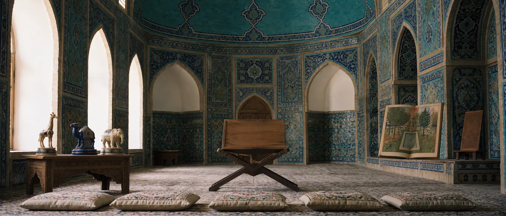

《纳法伊斯·富努恩》
记载大象棋棋盘的十四世纪波斯百科全书。

穆罕默德·伊本·马哈茂德·阿穆利约于1340年代用波斯语编纂了百科全书《纳法伊斯·富努恩》——《诸学之珍》。在诸多知识之中，也有象棋。
阿穆利记述了“带堡垒的棋”和大象棋的棋盘：10 × 11框架内的110格以及凸出的城堡。这是关于大棋盘最早的证据之一，比帖木儿早几十年。
阿穆利没有完整叙述规则，因此关于这种棋本身的主要来源仍是伦敦手稿MS 211。
记载大象棋棋盘的十四世纪波斯百科全书。

穆罕默德·伊本·马哈茂德·阿穆利约于1340年代用波斯语编纂了百科全书《纳法伊斯·富努恩》——《诸学之珍》。在诸多知识之中，也有象棋。
阿穆利记述了“带堡垒的棋”和大象棋的棋盘：10 × 11框架内的110格以及凸出的城堡。这是关于大棋盘最早的证据之一，比帖木儿早几十年。
阿穆利没有完整叙述规则，因此关于这种棋本身的主要来源仍是伦敦手稿MS 211。